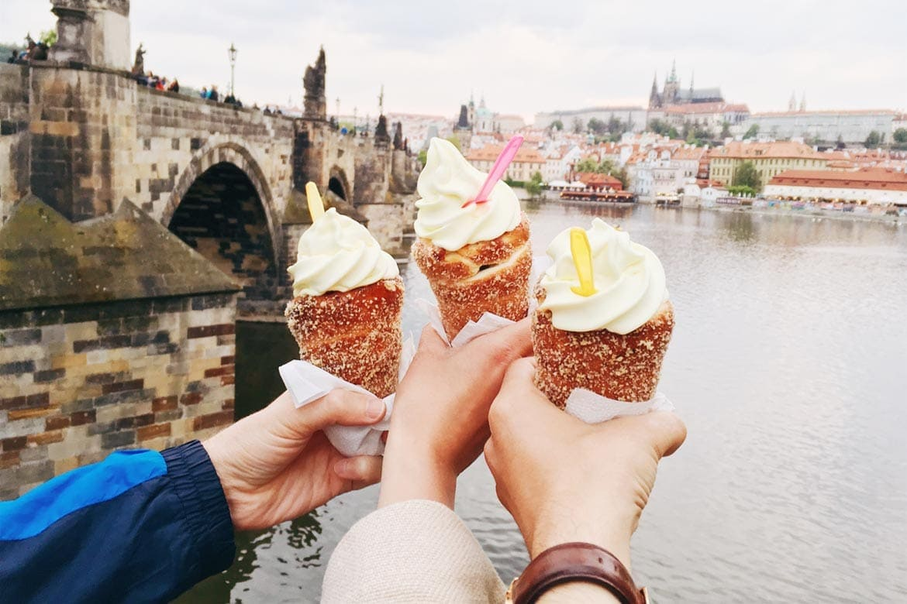
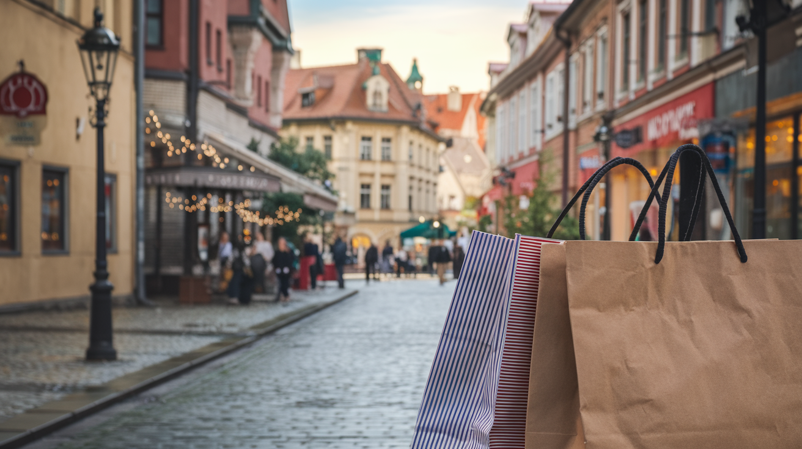
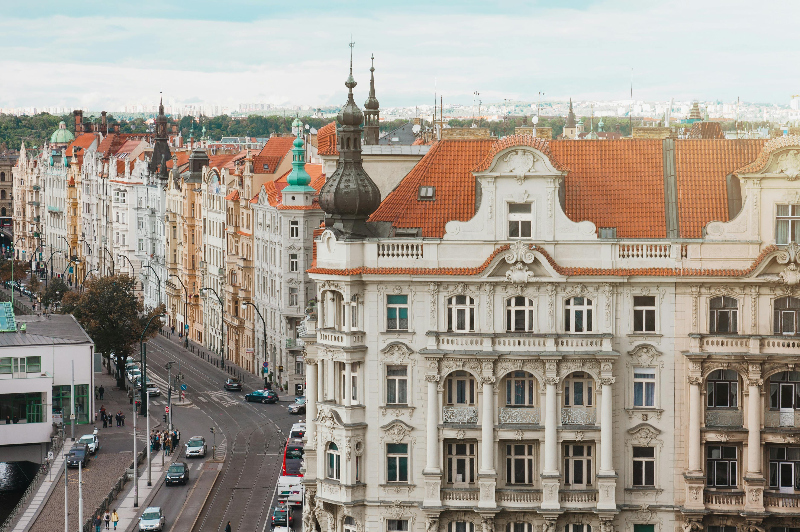

Explore Prague
Everything you need to know before visiting
Essential Info
- Currency: Czech Koruna (CZK)
- Language: Czech (learn basic phrases like "Dobrý den" (Hello) and "Děkuji" (Thank you)). English is widely understood in tourist areas.
- Getting Around:
- -> Prague’s public transport system is excellent, including trams, buses, and the metro.
- -> Walking is highly recommended, especially in the Old Town and historic districts.
- -> Taxis are available, but use apps like Bolt or Uber for better rates.

Top Attractions
- Prague Castle: The largest ancient castle complex in the world, with stunning views and the St. Vitus Cathedral inside.
- Charles Bridge: A historic pedestrian bridge lined with statues, perfect for picturesque walks.
- Old Town Square: Famous for its Astronomical Clock and vibrant atmosphere.
- Jewish Quarter (Josefov): Explore synagogues, museums, and the Old Jewish Cemetery.
- Petrin Hill & Observation Tower: A scenic spot offering panoramic views of Prague.
- Dancing House: A modern architectural wonder, also known as the "Fred and Ginger" building.

Best Restaurants
- For Czech Cuisine:
- Lokál: Known for traditional Czech dishes and local beer.
- Kuchyň: Offers classic recipes with stunning views of Prague Castle.
- U Kroka: A cozy restaurant serving authentic Czech meals.
- International Cuisine:
- Eska: A modern take on Czech and international flavors.
- Sasazu: For Asian fusion cuisine.
- Pastry and Desserts:
- Café Savoy: Famous for its pastries and classic ambiance.
- Good Food Coffee and Bakery: Known for its Trdelník (chimney cake).
- Beer and Pubs:
- U Medvídků: A historic brewery and restaurant.
- BeerGeek Bar: A great spot for craft beer lovers.

Best Time to Visit
- Spring (April to June): Mild weather with blooming gardens and fewer tourists.
- Fall (September to November): Crisp air and beautiful autumn colors.
- Winter (December to February): Experience the magical Christmas markets and cozy pubs.
- Avoid: July and August if you dislike crowds and hot weather.

Shopping in Prague
- Palladium: A large shopping mall with over 200 stores, perfect for fashion, accessories, and souvenirs.
- Pařížská Street: The most luxurious shopping street, home to high-end brands and designer boutiques.
- Havelské tržiště: A historic outdoor market offering local crafts, souvenirs, and fresh produce.
- Nový Smíchov: A modern mall with a variety of shops, a cinema, and dining options.
- Ceramic and Crystal Shops: Discover Czech-made ceramics and famous Bohemian crystal items.

Tips for Tourists
- Currency Exchange: Avoid exchange offices with "0% commission" signs—they often offer poor rates. Use ATMs or reliable banks.
- Public Transport: Purchase a daily or multi-day pass for unlimited travel. Validate your ticket before boarding to avoid fines.
- Book in Advance: Tickets for Prague Castle and popular attractions are often cheaper online.
- Local Etiquette: Always greet with "Dobrý den" and say "Děkuji" as a polite gesture.
- Stay Safe: Beware of pickpockets, especially in crowded areas like Charles Bridge and the metro.
- Tipping: Tipping around 10% in restaurants is customary but not mandatory.
- Walk as Much as Possible: Prague’s historic center is best explored on foot.

Bonus Experiences
- Day Trips:
- Kutná Hora: Visit the famous Sedlec Ossuary (Bone Church).
- Karlštejn Castle: A stunning Gothic castle just outside Prague.
- Český Krumlov: A fairy-tale town with a UNESCO-listed historic center.
- Hidden Gems:
- Vrtba Garden: A Baroque garden offering a tranquil escape.
- Kampa Island: A peaceful area with picturesque canals.
- Nightlife: Enjoy rooftop bars like T-Anker or lively beer gardens like Letná Park.
- Beer Tours: Discover Prague’s brewing history with a guided beer tour.